This thesis aims to explore the opportunities of voxel modeling with Machine Learning. First, it introduces (1) what voxel modeling is, compared to traditional model technic, what the characteristics of voxel model such as pixel map and graph representation, and what the Deep Learning and network are. The thesis examines (2) prototypical implementations of proposed design systems or workflows based on the process from rasterization of space and geometry to Machine Learning.
inference classification or ranking recommendation voice recognition translation … amazon google facebook microsoft Tesla ...
Next!CAAD (Computer-aided architectural design) creation, modification, analysis, or optimization of a design
Next!fabrication 3D printing material physically based rendering BIM (Building Information Modeling) modeling library ...
Next!
scene parsing , semantic segmentation, colorization Learning Deep Features for Scene Recognition DeepStereo: Learning to Predict New Views from the World's Imagery Data-driven Visual Similarity for Cross-domain Image Matching Learning a Probabilistic Latent Space of Object Shapes via 3D Generative-Adversarial Modeling
Next!

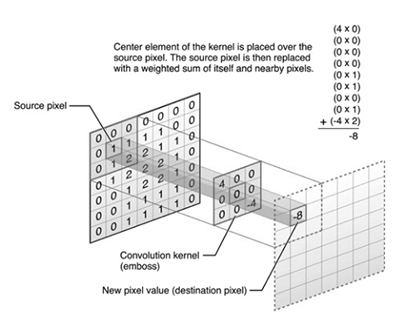
[LeCun et al 2012]
Conv filters were 5x5, applied at stride 1
Subsampling (Pooling) layers were 2x2 applied at stride 2
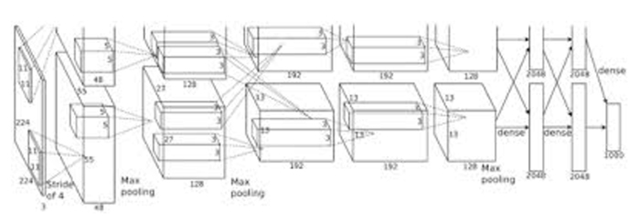
[krizhevsky et al 2012]
Input: 227 X 227 X 3 images
ReLu, dropout
7 CNN ensemble: 2.8 reduction of error 18.2% -> 15.4%
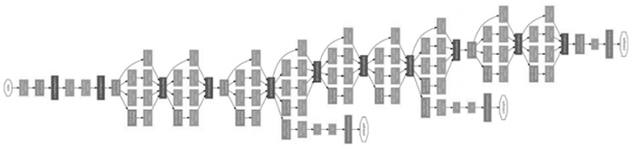
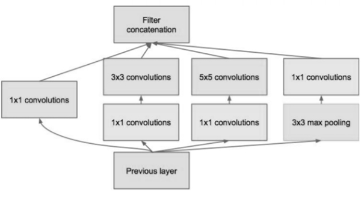
[Szegedy et al., 2014]
Inception module
ILSVRC 2014 winner (6.7% top 5 error)

[He et al., 2015]
Xavier/2 initialization from He et al.
No dropout used
ILSVRC 2015 winner (3.6% top 5 error)

How they construct:
Adding or removing Vertex and its connectivity in a space
Data:
Containing point and its connectivity including normal, UV and so on

How they construct:
Define mathematical model for curves or surfaces
Data:
Control points, Knot vector, and Positional, tangential and curvature continuity

Connectivity or data dependency , relational data base
- Like Graph model or BIM : how they are related in a space

voxel & pixel
dense representation
continuous information
implicit relations due to proximity [neighbors]
Mesh (graph like structure)
sparse representation
discrete points or information
explicit relations

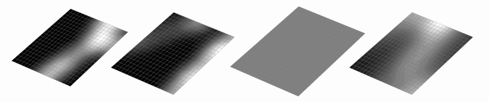
- Pixel is point like feature, this pixelated grid carries the information
and help to do position.
- the idea pixelated or voxelated space allows describe properties that derived
by point to point in space.
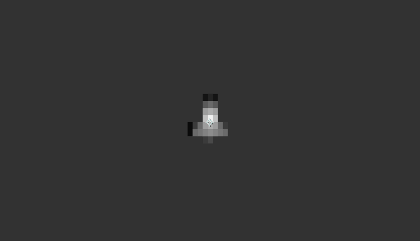
forward propagation:
Walker-ability for urban energy modeling
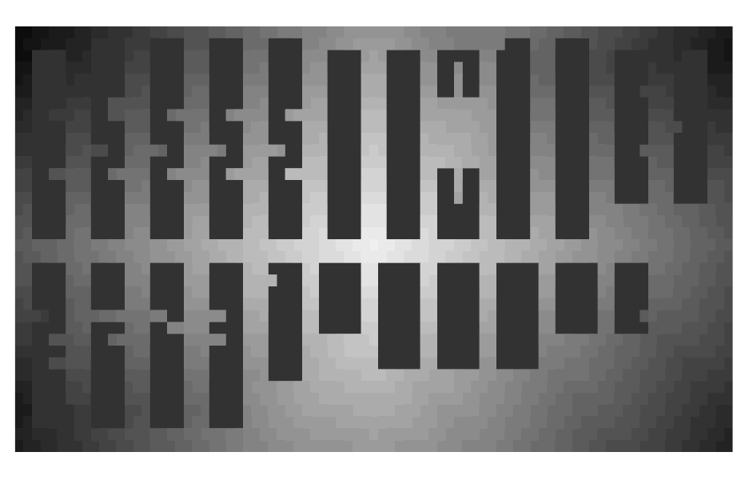
Properties :
distance
slope
retail
tree(park)
outdoor Thermal Comfort
view ...
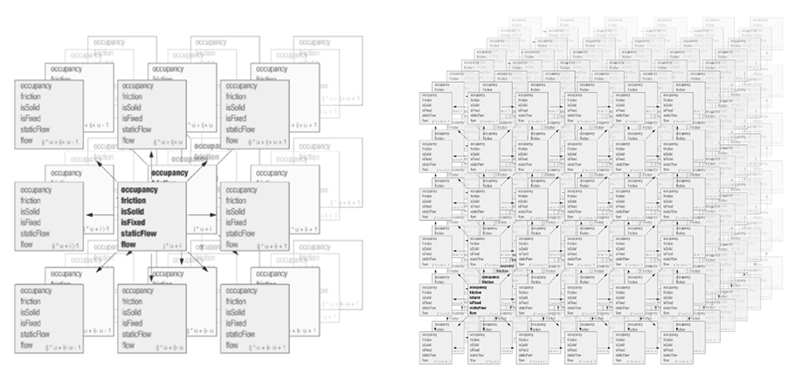
- Voxel could be considered as a set of image(pixel)
Voxel is a 3 dimensional grid containing pixels can have rich data set including R, G, B, A values.
It is frequently utilized for visualization of scientific or medical data which is needed for volumetric representation.
Voxel for geometry in space is a discretized space of geometry
where it has a beam or node are connecting but as a continuous map in space.
This is basically an idea that an object become a 3 dimensional map.

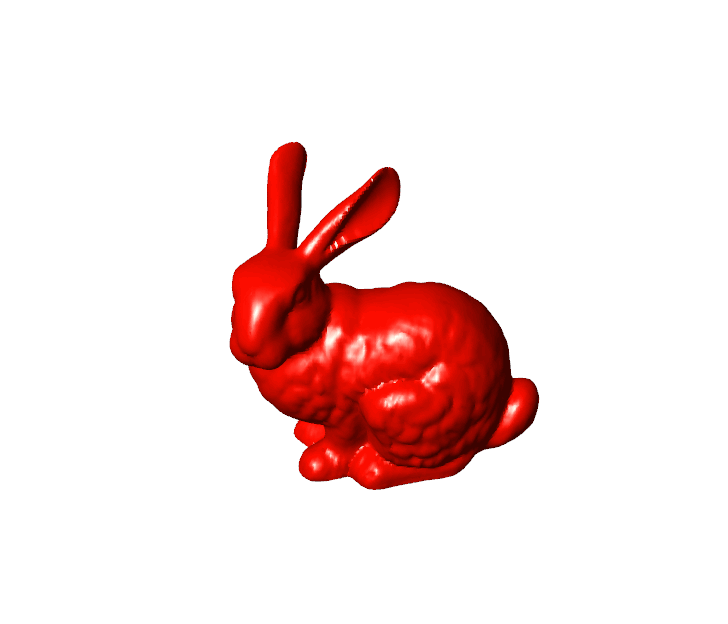
Mesh rasterization
Construction from sequence images
capture data
...
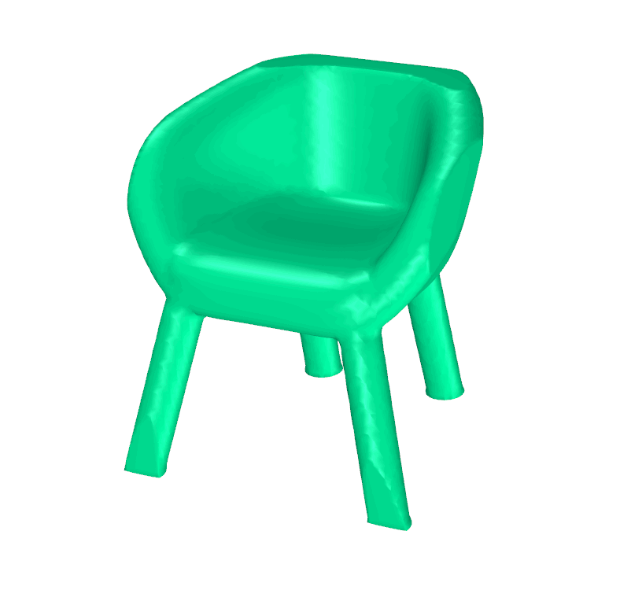
Blending modes
Threshold
Brushing
Filter: Smoothing and so on
...
 5 classes and 1,000 images for each class
capture all possible angle along X, Y and Z axis
5 classes and 1,000 images for each class
capture all possible angle along X, Y and Z axis
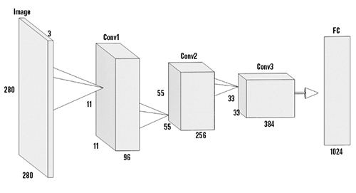 train : 3,200 images (random) validation : 800 images (random) optimization Adam Optimizer Gradient Descent Optimizer Momentum Optimizer Proximal Gradient Descent Optimizer Ftrl Optimizer RMSProp Optimizer
Next!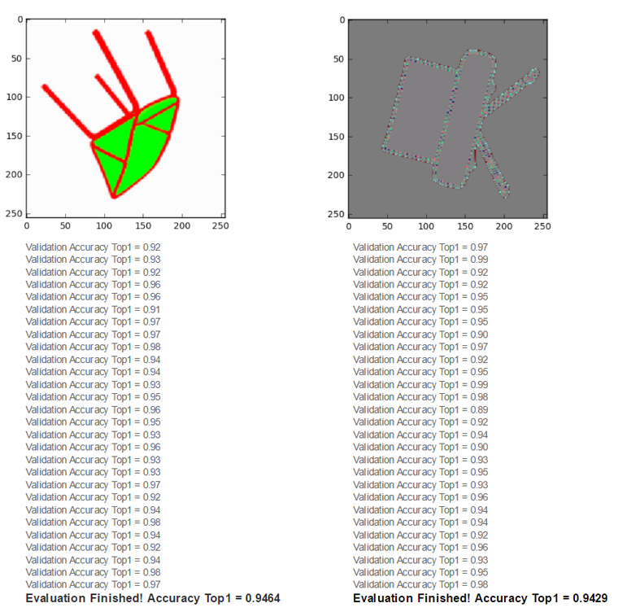 data_mean = np.asarray([0.5,0.5,0.5]) image = image - self.data_mean

 180 degree of object’s facade
or
380 degree along X, Y and Z axis
180 degree of object’s facade
or
380 degree along X, Y and Z axis
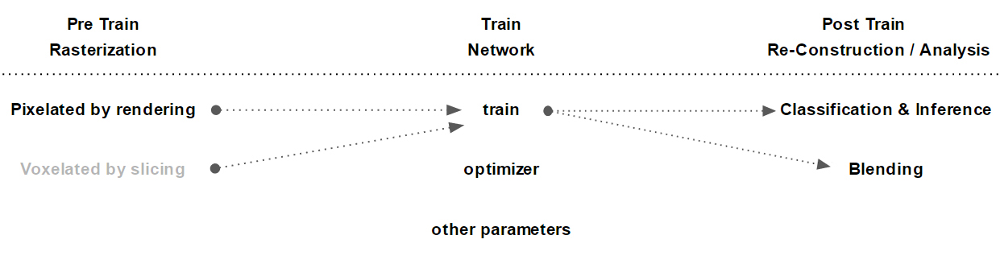
design workflow
Machine Learning with Voxel

TRAIN PROPERTIES
class : 13
train images : 13,000 images
one iteration : 100 images
epoch : 1400 iterations
total iteration : 140,000
network : originated from alexNet
framework: Tensorflow
optimizer: tf.train.AdamOptimizer
learning rate = 0.01
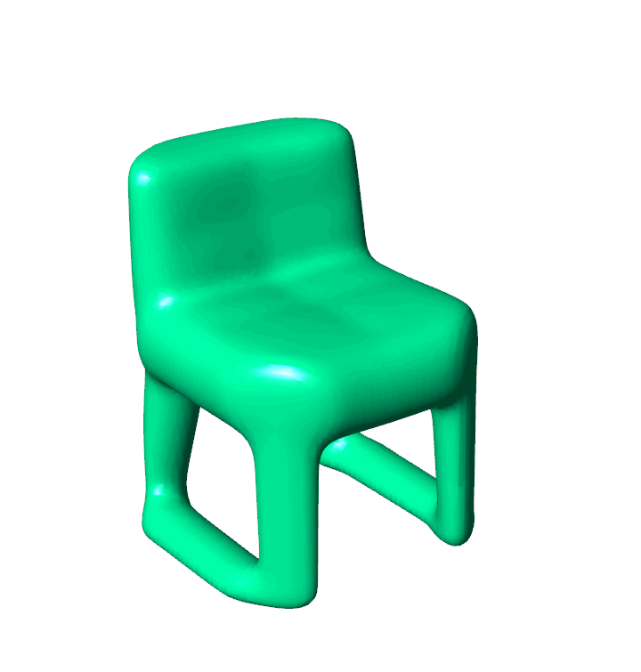
Blend
f(a,b, blend ) = a (1.0 - blend ) + b * blend
Multiply
f(a,b) = ab
Screen
f(a,b) = 1 - ( 1 - a ) ( 1 - b )
Overlay
f(a,b) = 2ab , if a < 0.5
f(a,b) = 1 - 2 ( 1 - a ) ( 1 - b ) , if a > 0.5
Soft Light
f(a,b) = 2ab + a^2 (1 - 2b) , if a < 0.5
f(a,b) = 2a (1-b) + sqrt(a) ( 2b - 1) , if a > 0.5


 design workflow
Machine Learning with Voxel
design workflow
Machine Learning with Voxel
 rendering
rendering
 slice mesh with Monolith
slice mesh with Monolith

 clear outline when resize (224X224)
clear outline when resize (224X224)


 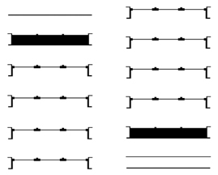
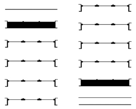